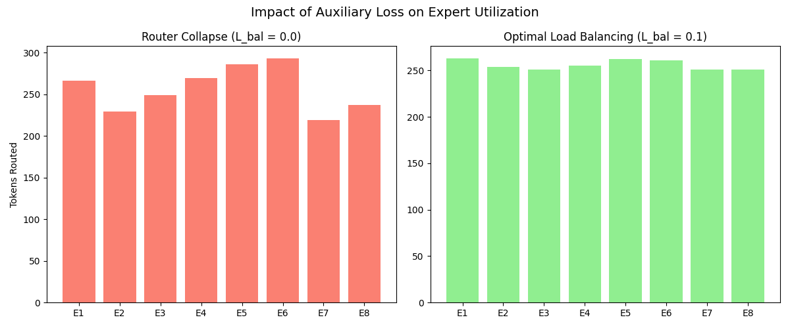

A code-first tour of MoE: why we route tokens to experts, the load-balancing loss, and a minimal PyTorch block you can read in one sitting.
Author
Ramu Nalla
Published
April 19, 2026
Published by Ramu Nalla - April 19, 2026
Expert utilization with router in MoE
Scaling language models has two painful axes:
Parameters (how much the model can store) and
Compute (how many FLOPs you actually spend per token).
If you make every feed-forward layer wider, you pay both bills in full.
Sparse Mixture of Experts (MoE) is a way to grow capacity—more parameters, more specialized sub-networks—without multiplying the per-token cost of the FFN by the same factor. The trick is simple to state and subtle to train: for each token, at each MoE layer, a router picks a small subset of experts; only those experts run on that token.
In this post I will walk through the concept, the mathematics (routing, combination, auxiliary loss), where MoE sits inside a Transformer block, and a compact PyTorch implementation in the same spirit as the reference code in this repository. I will not pretend that a toy demo is a production MoE stack—but the objects and gradients are the real ones.
1. The problem MoE tries to solve
Dense FFNs scale linearly in width
In a standard Transformer block, after self-attention, each token vector \(x \in \mathbb{R}^d\) passes through a feed-forward network (often SwiGLU or GELU-MLP). Roughly:
\[
h = \mathrm{FFN}(x)
\]
If you double the intermediate width, you roughly double parameters and FLOPs per token for that layer.
MoE: many FFNs, few active
A sparse MoE layer replaces that single FFN with \(E\)experts\(\{f_1, \ldots, f_E\}\), each of which is a full FFN (same role as the dense one). A router (gating network) outputs scores over experts. For each token you keep only the top-\(k\) experts (\(k \ll E\)), run them, and combine their outputs.
So total parameters grow with \(E\), but compute per token scales with \(k\) times the cost of one expert—not \(E\).
Why we actually use it
More expressivity for a fixed training or inference budget per token.
Specialization: different experts can specialize to different patterns (syntax, facts, code, etc.), though specialization is emergent—not hand-assigned.
Cost: you accept memory (all experts must live somewhere) in exchange for conditional compute (only \(k\) experts fire per token).
The catch is routing. If training is left to a plain language-modeling loss only, the router often collapses: a few experts get almost all the traffic and the rest go under-trained. That is why papers and systems add an auxiliary load-balancing loss.
2. Where MoE lives in the Transformer block
A decoder-only block (the usual LLM shape) still alternates:
Norm → self-attention → residual
Norm → feed-forward → residual
In an MoE model, item (2) becomes Norm → MoE FFN → residual. Nothing about self-attention inherently changes; the MoE is a drop-in replacement for the FFN sublayer.
Stack \(L\) layers, and you may have an MoE FFN in every layer or only in some layers (design choice). Each such layer has its own router weights. The next-token prediction still comes from the final hidden states after all layers, through the language modeling head—experts do not “emit vocabulary” directly; they update hidden representations on the path to that head.
3. Mathematics
Notation
Batch of token positions (after flattening batch and sequence): \(N\) vectors \(x_t \in \mathbb{R}^d\), \(t = 1,\ldots,N\).
\(E\) experts, each \(f_i: \mathbb{R}^d \to \mathbb{R}^d\).
Router produces logits\(g_t \in \mathbb{R}^E\) for each token. A linear gate is the common choice:
\[
g_t = W_g x_t + b_g
\]
Bias is optional; many implementations use no bias.
This is the soft probability that expert \(i\) is relevant for token \(t\). It is used in the auxiliary loss and sometimes in analysis; the forward pass for sparse MoE usually uses hard top-\(k\) selection for compute.
Hard top-\(k\) selection (which experts run)
Let \(\mathcal{S}_t \subset \{1,\ldots,E\}\) be the set of the \(k\) largest entries of \(g_t\). Let \(g_t^{(1)}, \ldots, g_t^{(k)}\) be those selected logits (not the full vector). A standard combination rule applies softmax only among the selected logits to get non-negative weights that sum to one:
\[
w_{t,m} = \frac{\exp(g_t^{(m)})}{\sum_{m'=1}^k \exp(g_t^{(m')})}, \quad m = 1,\ldots,k
\]
If expert \(i\) is the \(m\)-th selected expert for token \(t\), its contribution weight is \(w_{t,m}\).
where \(i(t)\) indexes which slot in the top-\(k\) list corresponds to expert \(i\). In implementation this is a weighted sum of at most \(k\) expert outputs, each evaluated at the same\(x_t\).
Primary training loss (language modeling)
For a causal LM, the main loss is cross-entropy over the vocabulary at each position, aggregated over the batch (mean or sum). Schematically:
where \(v\) is the next token at position \(t\). That loss does not explicitly encourage uniform expert use.
Auxiliary load balancing loss (Switch-style intuition)
Define, over a minibatch of tokens:
Importance (mean soft probability per expert):
\[
P_i = \frac{1}{N} \sum_{t=1}^N p_{t,i}
\]
Load (fraction of top-\(k\) dispatch slots assigned to expert \(i\)). There are \(N \cdot k\) such slots. Let \(n_i\) be the count of times expert \(i\) appears in the top-\(k\) sets across all tokens. Then:
\[
f_i = \frac{n_i}{N \cdot k}
\]
A common auxiliary term (same family as Switch Transformers / GShard) is:
\[
\mathcal{L}_{\text{aux}} = E \sum_{i=1}^E f_i \, P_i
\]
Intuition:\(f_i P_i\) is large when expert \(i\) receives many actual assignments (\(f_i\) high) and the router assigns high average softmax mass to that expert (\(P_i\) high). If a few experts dominate both, the sum grows. Training adds \(\lambda \, \mathcal{L}_{\text{aux}}\) with a small \(\lambda\) so the main task remains primary.
If you have MoE in \(L_{\text{moe}}\) layers, you typically compute \(\mathcal{L}_{\text{aux}}^{(\ell)}\)per layer from that layer’s gate logits and sum:
The following mirrors the structure of a small reference implementation: router (linear logits), experts (SwiGLU FFN), sparse dispatch (loop over experts—clear but not production-fast), and load-balancing loss.
This is the same story as production MoE—gate, top-\(k\), weighted sum—without fused kernels or expert parallelism.
5. How training uses both losses (toy vs real LM)
In a real LM step, you compute \(\mathcal{L}_{\text{task}}\) once from the logits at the top of the network. Each MoE layer returns (or stores) gate logits; from each you compute \(\mathcal{L}_{\text{aux}}^{(\ell)}\). The tensor you call .backward() on is a single scalar:
In a controlled toy setup, you can train a single MoE block on a proxy regression loss so the gate and experts receive gradients, then histogram hard top-\(k\) assignments with and without an auxiliary balancing term. Sec - 6 shows one such comparison; it is illustrative, not a language-modeling benchmark.
6. What the routing histogram is showing

Figure 1: Expert utilization: primary loss only (left) versus primary loss plus load-balancing auxiliary loss (right).
We trained two copies of the same small MoE layer from the same initialization. The only deliberate change was the training objective: primary loss only versus primary loss plus the load-balancing term \(\lambda \mathcal{L}_{\text{aux}}\) from §3 (here, \(\lambda = 0.1\) on the right-hand panel). After optimization, we ran the gate once on a fixed batch, collected hard top-\(k\) expert indices for every position, and histogrammed how often each expert was selected. Bar height is that count—routing load, not perplexity or accuracy.
With \(N\) positions and \(k\) routed experts per position, there are \(N k\)dispatch slots in total. Under uniform hard routing across \(E\) experts, each expert would hold a share \(N k / E\) of those slots; a level histogram at that value means assignments are spread across the expert pool in proportion to capacity.
In Figure 1, the left panel is the failure mode people warn about: a few experts absorb most of the top-\(k\) mass while others rarely fire—router collapse. The right panel shows the effect of including \(\mathcal{L}_{\text{aux}}\): counts move toward the fair-share line, consistent with the loss coupling observed dispatch to average gate probabilities (Section-3). Treat this as a behavioral check that the auxiliary term does useful work; choosing \(\lambda\) and judging quality still belong to your real task and training stack.
7. Engineering reality (what papers compress into one sentence)
Router collapse
Without an auxiliary term (or without enough capacity / regularization), a few experts win almost all top-\(k\) slots. You pay for \(E\) experts but effectively train one wide path.
The loop over experts
The reference dispatch loop is readable and correct for shape checking. Serving systems use fused MoE kernels, grouped GEMMs, or expert parallelism across devices so you do not launch \(E\) separate sparse gathers for large \(E\).
Capacity vs memory
MoE increases parameter count and memory bandwidth (weights for all experts must be read eventually across the batch). Sparse activation saves FLOPs per token, not necessarily VRAM for the full checkpoint.
Conclusion
MoE is not a new attention mechanism; it is a structured way to spend compute where the router sends it. The hard top-\(k\) gate keeps per-token FFN cost bounded while the model retains many expert FFNs. The load-balancing loss exists because the task loss alone does not tell the router to use the capacity you built.
Once you see MoE as attention unchanged + FFN replaced by gated experts, the rest is engineering: stable routing, efficient dispatch, and scaling the auxiliary term so specialization helps rather than hurts.
The split-panel histogram in Sec-6 (Figure 1) is a compact illustration of collapse versus balanced hard routing under a controlled setup. It complements the math in Sec-3; scaling laws and production MoE training need their own metrics and sweeps.